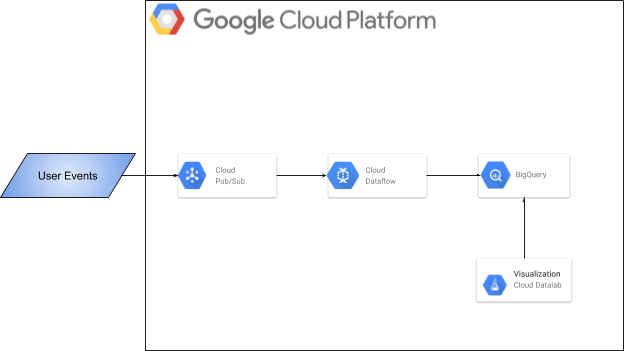

Problem
Large news aggregation and discussion website needed to find user retention details. Cohort analysis was used to find user retention details. For running the Cohort analysis user data had to be collected, processed, stored and visualized.
User data were sent as streaming data at a very high rate. These user data had to be processed and stored to find out user retention ratio using cohort analysis
Challenges
- Processing large volumes (In terabytes) of streaming data
- Performance of the rate at which each record was processed
- Partitioning and Clustering BigQuery tables to optimize performance and to minimize querying cost
Tools
-
Google PubSub
-

Google BigQuery
-

Google Dataflow
-
Google Data Studio
-
Google Cloud ML
-
Google Datalab
Solution

- User feeds were sent as high rates streaming data to Google PubSub from the aggregator
- The data from Google PubSub was consumed by Google Dataflow using Apache Beam PubSub connector
- Data cleansing and enrichment were done using Google Cloud Dataflow
- Processed data was stored in Google BigQuery as it handles a huge volume of data
- Data were further aggregated according to the cohort analysis and were stored in Google BigQuery as well. Google BigQuery scanned 20 TB of data within a few minutes
- Google Data Studio templates were used for visualization of the data from BigQuery via BigQuery Connector
- Google CloudML was used for prediction and anomaly detection on the historical data